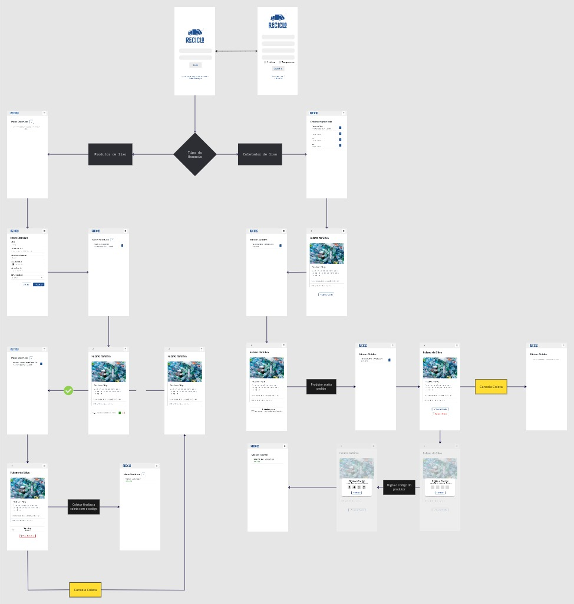
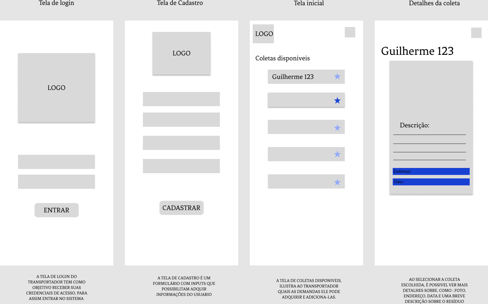
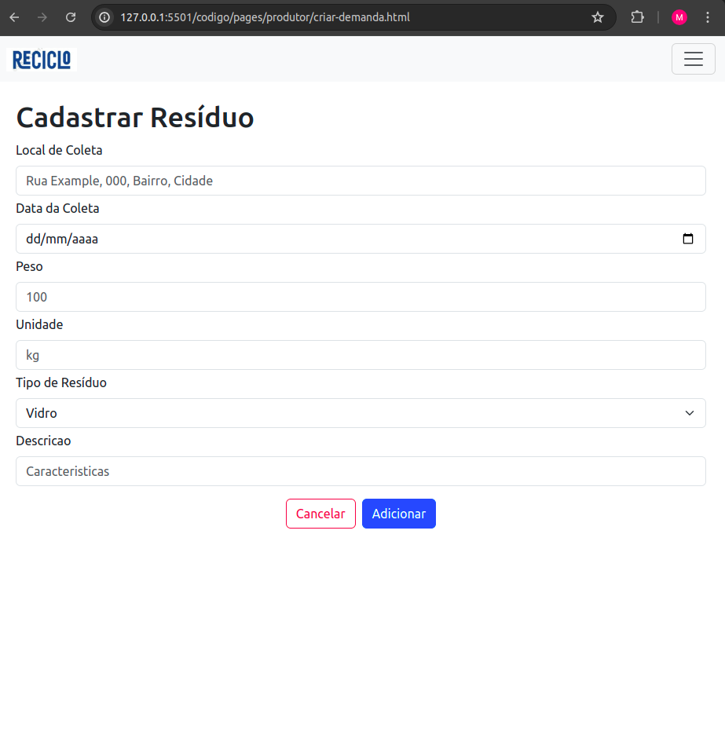
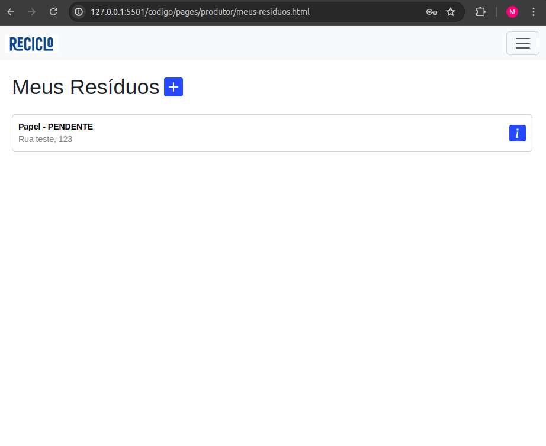
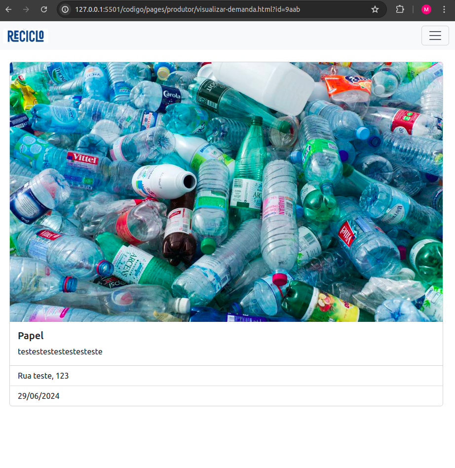
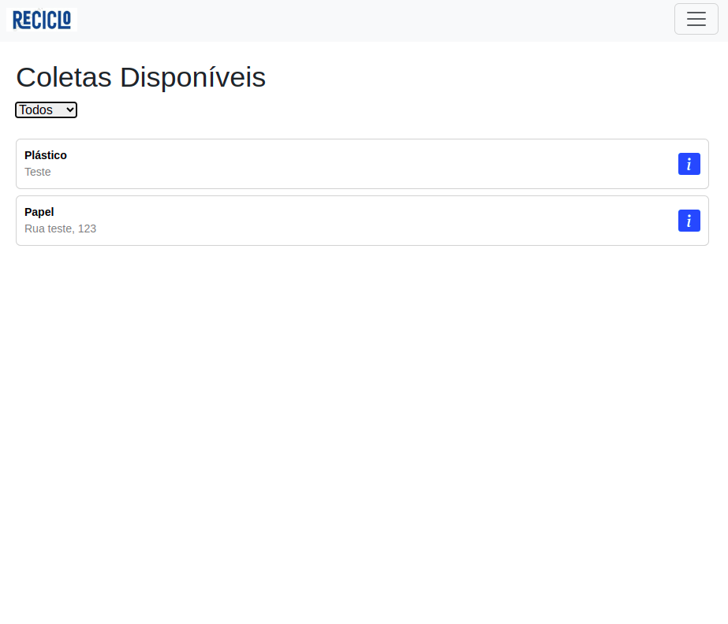
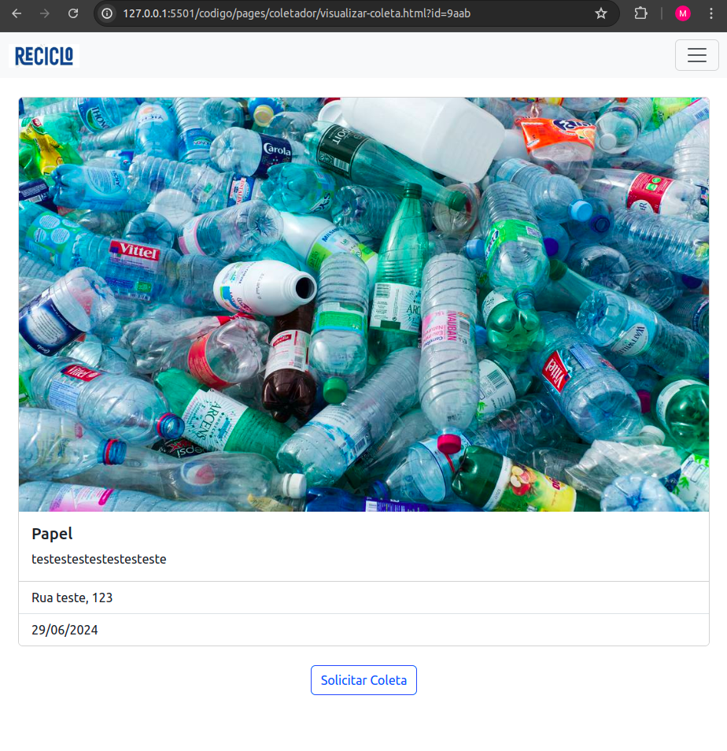
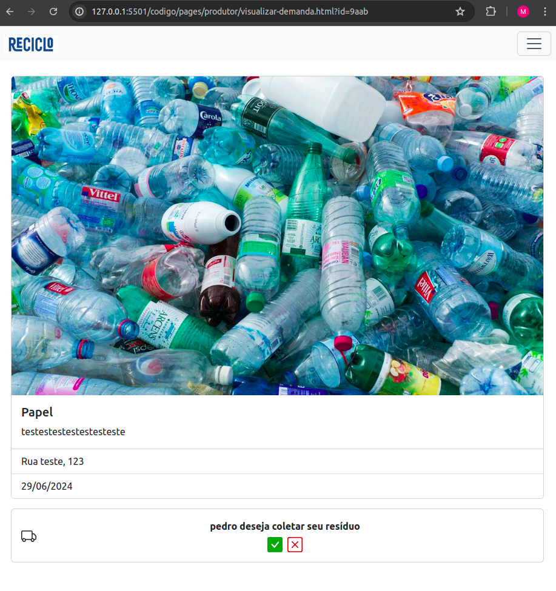

Introdução
Informações básicas do projeto como nome e membros da equipe.
Informações Gerais
- Projeto: ReCiclo
- Repositório GitHub: Trabalho Interdisciplinar Grupo 1 - ReCiclo
- Membros da equipe:
Contexto
Detalhes sobre o espaço de problema, justificativas e os objetivos do projeto.
Problema
A coleta seletiva é de fundamental importância no contexto da sustentabilidade ambiental, sendo crucial para gestão e o gerenciamento de resíduos recicláveis. No entanto, apesar de sua relevância em diversos aspectos, a eficiência da coleta seletiva enfrenta desafios em todo o mundo. Este problema pode ser descrito como uma ineficiência na coleta, triagem e destinação inadequada dos resíduos recicláveis. Entre os aspectos que contribuem para essa ineficiência estão: cobertura geográfica limitada, falta de infraestrutura adequada, desconhecimento e falta de educação sobre o tema, modelos de coleta diversificados, falta de monitoramento e indicadores claros. Em resumo, a ineficiência na coleta seletiva é um problema multifacetado que requer abordagens integradas, educação pública e investimentos contínuos em infraestrutura e monitoramento.
Objetivos
O objetivo principal deste projeto é desenvolver uma aplicação Web que contribua para
a eficiência da coleta seletiva. A solução consiste em contornar os desafios mencionados de forma a
facilitar o contato entre aqueles indivíduos que realizam a separação adequada de resíduos recicláveis
e indivíduos interessados em realizar a coleta destes resíduos e encaminhá-los para o local correto de
descarte.
- Como objetivos específicos:
- Identificar os desafios e necessidades dos envolvidos na coleta seletiva;
- Aumentar o número de resíduos recicláveis que têm o correto local de destino;
- Facilitar e viabilizar o contato entre os coletadores de resíduos recicláveis e as pessoas que realizam a separação desses resíduos.
Justificativa
Uma das principais dificuldades enfrentadas no país para realizar uma reciclagem efetiva é a falta da infraestrutura adequada.
Segundo dados da Ciclosoft 2023, apenas 35,9% da população tem a coleta seletiva à sua disposição. Além disso, outro fator que
é chave para a causa deste problema é a falta de conhecimento da população a cerca do assunto.
De acordo com o relatório "What a Waste 2.0", relatório desenvoldido a partir de um estudo realizado pelo Banco Mundial, que visa
abordar questões de gerenciamento de resíduos sólidos ao redor do mundo, espera-se que em 2050 a quantidade da produção de resíduos
aumente em 70%, chegando a 3,40 bilhões de toneladas por ano, indicando um crescente aumento na demanda de uma coleta eficiente.
Para contornar tal situação, alguns países buscam desenvolver o ponto da gestão dos resíduos sólidos em seu território nacional.
No relatório desenvolvido em 2019 pela Associação Brasileira de Empresas de Limpeza Pública e Resíduos Especiais (ABRELPE)
foi destacado que, no ano de 2018, uma quantidade considerável dos resíduos sólidos produzidos em território nacional são despejados
inadequadamente, sendo 29,5 milhões de toneladas, equivalente a 40,5% do total de lixo coletado. Apesar de 59,5% dos resíduos serem coletador
e dispostos em aterros sanitários, apenas 4% dos resíduos sólidos que poderiam ser reciclados são direcionados para um local onde possam ser processados
corretamente, índice que está muito abaixo de outros país que tem um perfil de desenvolvimento econômico semelhante, como África do Sul, Chile e Argentina,
que tem 16% como média de reciclagem, de acordo com a International Solid Waste Association (ISWA).
Levando em consideração o ponto de vista econômico a reciclagem também interfere diretamente. De acordo com dados dispostos pela ABRELPE em 2019,
cerca de R$ 14 bilhões são perdidos anualmente por conta da ineficiência enfrentada pelo Brasil. Tal valor que poderia gerar renda para indivíduos que
trabalham com atividades relacionadas a este ciclo, como os coletadores. Levando como parâmetro países que já tem a coleta seletiva e reciclagem como padrão
podemos aponta o Japão, que desde 1995 produz 100% das suas garrafas pets utilizando materiais reciclados, reduzindo em 90% o uso de novos plásticos, diminuindo
a produção de um material que demora anos para se decompor na natureza, e além disso, diminuindo em 60% as emissões de dióxido de carbono, impactando positivamente
o meio ambiente de forma direta.
Portanto, apresentando todos estes pontos, é possível perceber que a viabilização de um contato mais direto entre produtores e coletores de resíduos sólidos recicláveis
pode ser uma solução muito benéfica para o país. Levando em consideração, questões econômicas, sociais e ambientais, sendo uma possível elevar a taxa da econômia circular,
dar a oportunidade de uma camada social ter mais eficiência no seu dia a dia de trabalho, contribuindo diretamente com o meio ambiente, problema que é discutido frequentemente
nos dias de hoje, levando em consideração as condições em que o nosso planeta se encontra.
Público-alvo
O público-alvo do projeto foi dividido em dois segmentos distintos, levando em consideração os diferentes perfis que nossa proposta abrange. Identificamos que o perfil daqueles que atuam como coletores difere daqueles que realizam a separação dos resíduos.
Coletadores
Indivíduos com idades entre 35 e 50 anos, predominantemente do sexo masculino, familiarizados com o uso de tecnologia, especialmente smartphones. São autônomos que realizam serviços de transporte, sendo a coleta de resíduos recicláveis sua principal fonte de renda. Eles transportam e vendem esses resíduos para empresas que os processam e lhes dão a devida finalidade.Produtores
Pessoas com idades entre 25 e 40 anos, que possuem habilidades avançadas no uso de tecnologia e têm formação superior completa. Com empregos estáveis, residem em bairros residenciais de média e alta renda. Demonstram preocupação com a saúde do planeta e estão ativamente engajadas em adotar práticas que promovam a sustentabilidade e beneficiem o meio ambiente.Concepção (Design Thinking)
Detalhes do processo de discovery do projeto.
Apresente o processo de discovery do projeto. Com foco na experiência do usuário, esse processo abrange a compreensão do contexto do problema e das características do usuário, a definição do problema, a geração de ideias, a prototipagem e a elaboração de uma proposta de solução
Processo de Design Thinking
O arquivo que se segue apresenta o resultado desse processo.
Apresente o processo de Design Thinking realizado pelo grupo e documentado por meio do software Miro. No documento apresentado, devem ser incluídos: (1) a matriz CSD, (2) o mapa de stakeholders, (3) as personas, (4) as respectivas propostas de valor e (5) o processo de ideação identificando as ideias levantadas e sua priorização.
Especificações do Projeto
Documentação das especificações do projeto.
Apresente as especificações do projeto, incluindo as histórias de usuário e os requisitos funcionais e não funcionais.
Histórias de Usuários
Com base na análise das personas foram identificadas as seguintes histórias de usuários:
Apresente aqui as histórias de usuário que são relevantes para o projeto de sua solução. As Histórias de Usuário consistem em uma ferramenta poderosa para a compreensão e elicitação dos requisitos funcionais e não funcionais da sua aplicação. Se possível, agrupe as histórias de usuário por contexto, para facilitar consultas recorrentes à essa parte do documento.
EU COMO...PERSONA |
QUERO/PRECISO...FUNCIONALIDADE |
PARA...MOTIVO/VALOR |
|---|---|---|
| Produtor de resíduos | preciso cadastrar uma demanda | para que um coletador possa recolher os materiais selecionados e encaminhá-los adequadamente para o destino final |
| Produtor de resíduos | preciso analisar o pedido de coleta | para que eu me sinta mais seguro em relação à determinado coletador vir ao local de coleta |
| Produtor de resíduos | preciso que seja gerado um código de validação | para que eu, juntamente com o coletor, mostremos ao sistema que a coleta foi concluida |
| Produtor de resíduos | preciso excluir uma demanda | para caso não possa oferece-la posteriormente |
| Produtor de resíduos | preciso consultar o status das minhas demandas cadastradas | para saber se foram aceitas ou não pelos coletadores |
| Coletor de resíduos | preciso visualizar os tipos dos materiais que compõe as demandas | para que eu saiba se posso aceitá-las |
| Coletor de resíduos | preciso saber a quantidade de resíduos disponíveis em cada coleta | para que eu sabia se tenho capacidade suficiente para tal demanda |
| Coletor de resíduos | preciso de uma lista com todas as demandas em aberto | para que eu possa escolher, com base em suas informações, a demanda que eu estou apto a coletar |
| Coletor de resíduos | preciso encerrar uma demanda | para que eu possa realizar a próxima coleta |
| Coletor de resíduos | preciso cancelar uma coleta | para que em caso de algum imprevisto ou empecilho eu não prejudique o produtor |
| Coletor de resíduos | preciso consultar meu histórico de demandas atendidas | para ter o controle geral das coletas aceitas |
Requisitos
As tabelas que se seguem apresentam os requisitos funcionais e não funcionais que detalham o escopo do projeto.
Com base nas Histórias de Usuário, enumere os requisitos da sua solução. Classifique esses requisitos em dois grupos:
- Requisitos Funcionais (RF): correspondem a uma funcionalidade que deve estar presente na plataforma (ex: cadastro de usuário).
- Requisitos Não Funcionais (RNF): correspondem a uma característica técnica, seja de usabilidade, desempenho, confiabilidade, segurança ou outro (ex: suporte a dispositivos iOS e Android).
Lembre-se que cada requisito deve corresponder à uma e somente uma característica alvo da sua solução. Além disso, certifique-se de que todos os aspectos capturados nas Histórias de Usuário foram cobertos.
Requisitos Funcionais
| ID | Descrição do Requisito | Prioridade |
|---|---|---|
| RF-001 | O sistema deve autenticar o usuário | ALTA |
| RF-002 | Deve haver uma lista de demandas disponíveis na tela do coletador | ALTA |
| RF-003 | O produtor deve ser capaz de cadastrar uma demanda | ALTA |
| RF-004 | O sistema deve redirecionar produtores e coletadores de materiais recicláveis para telas diferentes | MÉDIA |
| RF-005 | O coletador deve ser capaz de aceitar uma demanda, apenas se ela não tiver sido aceita por outro | MÉDIA |
| RF-006 | O coletador deve ser capaz de finalizar uma demanda, para que seja possível iniciar outra demanda | MÉDIA |
| RF-007 | O sistema deve gerar um código de validação da entrega para o produtor informar ao coletador na hora de finalizar a demanda | MÉDIA |
| RF-008 | Deve haver uma visualização detalhada da demanda, sendo acessível tanto por coletador quanto por produtor | MÉDIA |
| RF-009 | O coletador deve ser capaz de cancelar uma coleta | BAIXA |
| RF-010 | O produtor deve ser capaz de excluir uma demanda que foi cadastrada por ele | BAIXA |
| RF-011 | O produtor deve ser capaz de ver o status das demandas cadastradas, sendo possível visualizar se ela já foi aceita por algum coletador | BAIXA |
| RF-012 | Deve haver um histórico de demandas que já foram finalizadas, tanto por parte do produtor quanto do coletador | BAIXA |
Requisitos Não-Funcionais
| ID | Descrição do Requisito | Prioridade |
|---|---|---|
| RNF-001 | Deve ser gerado um id único para cada usuário cadastrado | ALTA |
| RNF-002 | As senhas dos usuários devem ser criptografadas em crypto | ALTA |
| RNF-003 | O tempo para acesso da plataforma não deve superar 3 segundos | MÉDIA |
| RNF-004 | O token informado pelo produtor também deve ser um hash | BAIXA |
| RNF-005 | O sistema deve ser responsivo, atendendo tanto a dispositivos móveis quanto a telas maiores | BAIXA |
Projeto de Interface
Artefatos relacionados com a interface e a interacão do usuário na proposta de solução.
Apresente a ideia de interface que está sendo prevista para o projeto. Inclua os wireframes, o user/screen flow e o protótipo interativo.
User/Screen Flow e Protótipo interativo
Artefatos relacionados com a interface e a interacão do usuário na solução proposta.
O fluxo de usuário (User Flow) é uma técnica que permite ao desenvolvedor mapear todo fluxo de
telas do site ou app. Essa técnica funciona para alinhar os caminhos e as possíveis ações que o
usuário pode fazer junto com os membros de sua equipe. 
Um protótipo interativo apresenta o projeto de interfaces e permite ao usuário navegar pelas
funcionalidades como se estivesse lidando com o software pronto. Veja o exemplo a seguir.
User Flow
Link: https://miro.com/app/board/uXjVKQOezKY=/?moveToWidget=3458764586759115647&cot=14
Link do protótipo interativo
https://www.figma.com/proto/Wg6vEJz5zNqfHctd5GX7AE/Untitled?type=design&node-id=1-4&t=eH4nJAcygVf4Toqz-0&scaling=scale-down&page-id=0%3A1&starting-point-node-id=1%3A4&show-proto-sidebar=1Prototipo interativo - visão do produtor
Prototipo interativo - visão do transportador
Wireframes
Protótipo de telas do sistema em baixa fidelidade (rascunhos).
Os Wireframes são protótipos das telas da aplicação usados em design de interface para sugerir a
estrutura de um site web e seu relacionamentos entre suas páginas. Um wireframe web é uma ilustração
semelhante ao layout de elementos fundamentais na interface. 

Na elaboração do Wireframe, foram desenvolvidas as 4 telas principais da aplicação com o objetivo de planejar o posicionamento dos botões e a estrutura de algumas funcionalidades do sistema. Estas telas incluem:
Tela de Login: Esta tela tem como finalidade receber as credenciais de acesso do usuário para permitir o ingresso no sistema.
Tela de Cadastro: Trata-se de um formulário que possibilitam a aquisição de informações do usuário, para que ele possa acessar a plataforma.
Tela de Coletas Disponíveis: Esta tela ilustra ao transportador quais são as demandas disponíveis para aquisição e adição.
Detalhes da Coleta Selecionada: Ao selecionar uma coleta específica, é possível visualizar mais detalhes, tais como foto, endereço, data e uma breve descrição sobre o resíduo.
Metodologia
Detalhes sobre a organização do grupo e o ferramental empregado.
Nesta parte do documento, você deve apresentar a metodologia adotada pelo grupo, descrevendo o processo de trabalho baseado nas metodologias ágeis, a divisão de papéis e tarefas, as ferramentas empregadas e como foi realizada agestão de configuração do projeto via GitHub.
Coloque detalhes sobre o processo de Design Thinking e a implementação do Framework Scrum seguido pelo grupo. O grupo poderá fazer uso de ferramentas on-line para acompanhar o andamento do projeto, a execução das tarefas e o status de desenvolvimento da solução.
Ferramentas
Relação de ferramentas empregadas pelo grupo durante o projeto.
Liste as ferramentas empregadas no desenvolvimento do projeto, justificando a escolha delas, sempre que possível. Inclua itens como: (1) Editor de código, ferramentas de comunicação, ferramentas de diagramação, plataformas de hospedagem, entre outras.
| Ambiente | Plataforma | Link de Acesso |
|---|---|---|
| Processo de Design Thinking | Miro | https://miro.com/app/board/uXjVKdA0GEM=/ |
| Repositório de código | GitHub | https://github.com/ICEI-PUC-Minas-PPLES-TI/plf-es-2024-1-ti1-0387100-reciclo.git |
| Hospedagem do site | Vercel | https://vercel.com/ |
| Protótipo Interativo | Figma | https://www.figma.com/proto/Wg6vEJz5zNqfHctd5GX7AE/Untitled?type=design&node-id=1-4&t=eH4nJAcygVf4Toqz-0&scaling=scale-down&page-id=0%3A1&starting-point-node-id=1%3A4&show-proto-sidebar=1 |
| Apresentação do projeto | Canva | https://www.canva.com/design/DAGC_5wyNLE/hfS1bngeqiKDoMcV6tlSVQ/view?utm_content=DAGC_5wyNLE&utm_campaign=designshare&utm_medium=link&utm_source=editor |
Gestão do Projeto
Divisão de papéis no grupo e apresentação da estrutura da ferramenta de controle de tarefas (Kanban).
Apresente a divisão de papéis e tarefas entre os membros do grupo. Informe quem é o Scrum Master, o Product Owner e os desenvolvedores. Informe também quem é o responsável pela documentação do projeto.
Apresente o quadro de gerenciamento do time (Kanban), seu formato e as experiências na utilização dessa ferramenta (GitHub Projects)
Seguindo a estrutura do Scrum, os papéis da metodologia foram distribuídos entre os integrantes da
equipe. Murilo Andrade foi atribuído como Scrum Master, Pedro Henrique como Product Owner e Otávio
Chaves, Júlia Maria e João Pedro como Desenvolvedores.
O processo de Design Thinking foi conduzido com a participação de todos os integrantes, cada um
contribuindo com sua opinião para alcançar um consenso que atendesse às diferentes perspectivas. O Scrum
Master, foi o responsável pela documentação, com o apoio do Product Owner e do Desenvolvedor Otávio
Chaves. Os demais desenvolvedores ficaram encarregados de criar a identidade visual da aplicação,
desenvolvendo os artefatos de interface do projeto, e também de estruturar os slides que serão
utilizados para a apresentação da primeira sprint.
Utilizamos o quadro Kanban para gerenciar as tarefas do projeto. Operamos a ferramenta usando tags que
indicavam a qual segmento do projeto a tarefa pertencia. Cada integrante foi atribuído com atividades
diretamente relacionadas ao papel que ele desempenhava no escopo do projeto, sendo responsável pela
priorização das demandas que estava encarregado.
Controle de Versão
Estrutura do fluxo de trabalho no ambiente do GitHub.
Discuta como a configuração do projeto foi feita na ferramenta de versionamento (GitHub). Exponha
como a gerência de tags, merges, commits e branchs é realizada. Discuta como a gerência de issues foi
realizada.

Para o controle do versionamento, durante a primeira sprint do projeto, na etapa de documentação, utilizamos apenas a branch Main. As issues foram distribuídas entre os integrantes, cada um recebendo tarefas relacionadas à função que desempenhava no projeto. No entanto, os commits foram realizados apenas pelos integrantes responsáveis pela documentação, durante a etapa em que o foco era o seu preenchimento.
Na etapa de desenvolvimento do código da aplicação, será criada uma branch para o desenvolvimento de cada requisito funcional do projeto, a fim de evitar conflitos de código. Cada integrante será responsável por validar e, caso a alteração feita no código esteja funcionando corretamente, realizar o commit da issue que estiver sob sua responsabilidade na branch Main.
Solução
Esta seção apresenta todos os detalhes da solução criada no projeto.
Apresente cada uma das funcionalidades que a aplicação fornece tanto para os usuários quanto aos administradores da solução.
Inclua, para cada funcionalidade, itens como: (1) titulos e descrição da funcionalidade; (2) Estrutura de dados associada; (3) o detalhe sobre as instruções de acesso e uso.
Video do Projeto
O vídeo a seguir traz uma apresentação do problema que a equipe está tratando e a proposta de solução.
O video de apresentação é voltado para que o público externo possa conhecer a solução. O formato é livre, sendo importante que seja apresentado o problema e a solução numa linguagem descomplicada e direta.
Utilize o recurso de compartilhamento via embed e inclua o vídeo logo abaixo.
...... COLOQUE AQUI O SEU VIDEO ......
Funcionalidades
Esta seção apresenta as funcionalidades da solução.
Apresente cada uma das funcionalidades que a aplicação fornece tanto para os usuários quanto aos administradores da solução.
Inclua, para cada funcionalidade, itens como: (1) titulos e descrição da funcionalidade; (2) Estrutura de dados associada; (3) o detalhe sobre as instruções de acesso e uso.
Funcionalidade 1 - Identificação do tipo do perfil do usuário (Produtor ou Coletor)
De acordo com o perfil selecionado na hora de realizar o cadastro, ao acessar o sistema o usuário tem acesso as funcionalidades que correspondam ao seu grupo.
- Estrutura de dados: Usuários
- Instruções de acesso:
- Acessar a tela para realizar o seu cadastro
- Selecionar a opção do tipo de usuário que o perfil se enquadra
- Ao acessar o sistema com este usuário você terá acesso as funcionalidades daquele grupo de usuário

Funcionalidade 2 - Cadastro de uma nova demanda (Produtor)
Permite a inserção de uma nova demanda no sistema
- Estrutura de dados: Coletas cadastradas
- Instruções de acesso:
- Abra o site e efetue o login em um perfil que tenha sido cadastrado como "produtor"
- Na tela inicial clique no botão + para adicionar um novo cadastrado
- Preencha as informações da demanda
Funcionalidade 3 - Visualizar os detalhes de uma demanda cadastrada (Produtor)
Tela dedicada para a visualização das informações de uma demanda de forma detalhada
- Estrutura de dados: Coletas cadastradas
- Instruções de acesso:
- Acessar no menu da Navbar a tela "Meus resíduos"
- Nesta tela também é possível ver o status daquela demanda ("PENDENTE" ou "CONCLUIDO")
- Clicar no ícone "i" ao fim da parte direita do card da demanda que deseja visualizar.
- Abrirá a tela com as suas informações detalhadas.


Funcionalidade 4 - Visualizar demandas disponíves para coleta (Coletor)
Visualização de todas as demandas que ainda não foram atendidas por nenhum coletor.
- Estrutura de dados: Coletas cadastradas
- Instruções de acesso:
- Abra o site e efetue o login em um perfil que tenha sido cadastrado como "coletor"
- Na tela "Coletas Disponíveis" terá todas as demandas disponíveis para atendimento.
- Caso o usuário queira, no canto superior esquerdo tem um campo para filtrar as demandas de acordo com o tipo dos resíduos.

Funcionalidade 5 - Solicitar coleta (Coletor)
Enviar solicitação de coleta para uma demanda que está aguardando atendimento.
- Estrutura de dados: Coletas cadastradas
- Instruções de acesso:
- Abra o site e efetue o login em um perfil que tenha sido cadastrado como "coletor"
- Na tela "Coletas Disponíveis" acessar os detalhes de alguma demanda que está disponível para ser atendida
- Clicar no botão "Solicitar Coleta" na parte inferior da tela para enviar pedido ao produtor responsável pelo cadastro daquela demanda

Funcionalidade 6 - Aceitar solicitação de coleta (Produtor)
Aceitar solicitação de coleta enviada por um coletor
- Estrutura de dados: Coletas cadastradas
- Instruções de acesso:
- Abra o site e efetue o login em um perfil que tenha sido cadastrado como "produtor"
- Na tela "Meus Resíduos" acessar os detalhes da demanda em questão
- Na parte inferior da tela terá dois botôes, um verde e um vermelho, para aceitar ou rejeitar a solicitação, respectivamente.

Funcionalidade 7 - Código gerado para informar ao coletor (Produtor)
Visualização do código gerado que será informado ao coletor na hora de concluir a demanda
- Estrutura de dados: Endereço da demanda
- Instruções de acesso:
- Acessar a tela de detalhes da demanda que está em processo de execução
- Na parte inferior da tela será possível visualizar o código gerado para aquela demanda
Funcionalidade 8 - Inserção do código para concluir a demanda (Coletor)
Modal para preencher com o código gerado para a demanda que será finalizada
- Estrutura de dados: Endereço da demanda
- Instruções de acesso:
- Acessar a tela de detalhes da demanda que está em processo de execução
- Na parte inferior da tela clicar no botão "Concluir coleta"
- Preencher com o código informado pelo produtor e clicar em "Concluir"
Estruturas de Dados
Descrição das estruturas de dados utilizadas na solução com exemplos no formato JSON.
Apresente as estruturas de dados utilizadas na solução tanto para dados utilizados na essência da aplicação quanto outras estruturas que foram criadas para algum tipo de configuração
Nomeie a estrutura, coloque uma descrição sucinta e apresente um exemplo em formato JSON.
Estrutura de Dados - Usuários
Registros de usuários para realizar login e para relacionar um usuário ao seu tipo de perfil.
"users": [
{
"id": "2",
"name": "Madruguinha",
"email": "vila@acapulco.com",
"cellphone": "31975881152",
"password": "12345678",
"userTypeId": 2
}
]
Estrutura de Dados - Tipos de usuários
Estrutura para relacionar o tipo de perfil que aquele usuário pertence (Coletor ou produtor de resíduo).
"userTypes": [
{
"id": "1",
"name": "Produtor"
},
{
"id": "2",
"name": "Coletor"
}
]
Estrutura de Dados - Coletas cadastradas
Informações a respeito de uma coleta cadastrada no sistema, com as informações relacionadas a ela.
"resdiues": [
{
"id": "1",
"collectorId": 2,
"producerId": 1,
"residuesTypesId": 1,
"deliveryId": 3,
"unity": "kg",
"quantity": 30
}
]
Estrutura de Dados - Tipos de resíduos
Estrutura para relacionar qual é o tipo de material que será coletado.
"residuesTypes": [
{
"id": "1",
"name": "Vidro"
},
{
"id": "2",
"name": "Plastico"
},
{
"id": "3",
"name": "Papel"
},
{
"id": "4",
"name": "Metal"
}
]
Estrutura de Dados - Informações do endereço da demanda
Informações a respeito do endereço em que será realizada a coleta.
"deliveries":[
{
"id": "5",
"address": "Av. Cristóvão Colombo, 470 - Funcionários, Belo Horizonte - MG",
"scheduleDate": "24/07/2024",
"securityCode": 9999,
"concluded": false
}
]
Módulos e APIs
Esta seção apresenta os módulos e APIs utilizados na solução.
Apresente os módulos e APIs utilizados no desenvolvimento da solução. Inclua itens como: (1) Frameworks, bibliotecas, módulos, etc. utilizados no desenvolvimento da solução; (2) APIs utilizadas para acesso a dados, serviços, etc.
Images:
Fonts:
Scripts:
- Chart.js - https://www.chartjs.org/
- Bootstrap 5 - http://getbootstrap.com/
FAQ
Perguntas e respostas comuns associadas ao projeto.
Apresente uma lista de perguntas e respostas comuns associadas ao projeto. Inclua perguntas como: (1) detalhes de acesso e uso do projeto; (2) informações sobre a instalação e configuração da aplicação; (3) questões sobre a manutenção da aplicação; (4) detalhes sobre a integração da aplicação com outros sistemas; (5) questões sobre a segurança da aplicação.
Referências Bibliográficas
Esta seção apresenta as referências bibliográficas utilizadas no projeto.
Apresente as referências bibliográficas utilizadas no projeto. Inclua itens como: (1) livros, artigos, tutoriais, etc. utilizados no desenvolvimento da solução; (2) links para sites, blogs, etc. utilizados no desenvolvimento da solução.
https://ancat.org.br/ pnrs-11-anos-ancat/
https://cempre.org.br/pesquisa-ciclosoft/
https://www.ipea.gov.br/cts/pt/central-de-conteudo/artigos/artigos/217-residuos-solidos-urbanos-no-brasil-desafios-tecnologicos-politicos-e-economicos
https://agenciabrasil.ebc.com.br/geral/noticia/2022-06/indice-de-reciclagem-no-brasil-e-de-4-diz-abrelpe
https://www.scielo.br/j/csc/a/RDFvSTprvh8CBzXrsZNrPQN/
TRAÇOS DO PERFIL DOS CATADORES DEMATERIAIS RECICLÁVEIS DO MUNICÍPIO DE CRUZ ALTA/RS